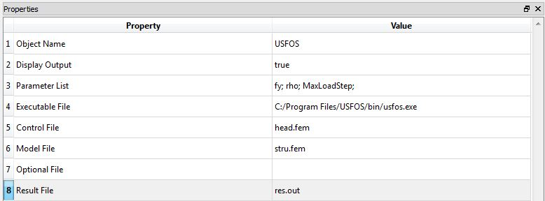
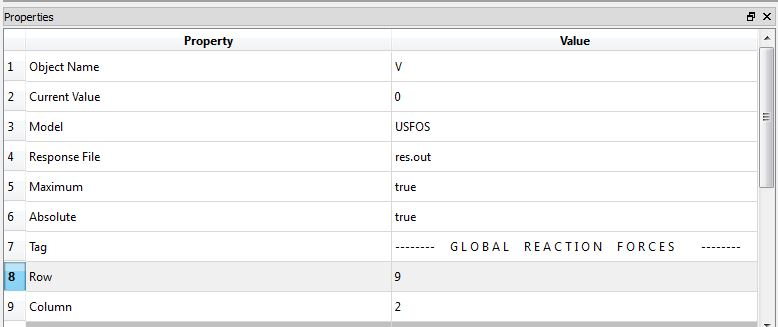

USFOS Model
Class Name
Location in Objects Pane
- Models > Model > External Software > USFOS
Model Description
Model Form
- For users who have USFOS installed on the computer, this model allows parameters to be given to USFOS and results to be returned to Rt.
DDM sensitivities
Properties
Object Name
- Name of the object in Rt
- Allowable characters are upper-case and lower-case letters, numbers, and underscore (“_”).
- The name is unique and case-sensitive.
Display Output
- Determines whether the model is allowed to print messages to the Output Pane.
Parameter List
- List of the parameters that should be mapped into the USFOS model.
Executable List
Control File
- Absolute path to the location of the USFOS control file, for example:
C:/head.fem
Model File
- Absolute path to the location of the USFOS model file, for example:
C:/stru.fem
Optional File
- Absolute path to the location of the USFOS optional file
Result File
- Absolute path to the location of the USFOS result file, for example:
C:/res.out
Output
- This model does not automatically create any response objects.
- Rather, creates File Response objects.
- In those objects, specify the name of the USFOS and the name of the file where USFOS puts the response.
Right-click Menu
Remove
Example

- To etablish a functioning connection between UFSOS and Rtx and use its results in Rt, the following procedure could be followed:
- It is recommended that the output files of UFSOS are saved in the same directory as Rt's executive file.
- Properties of the UFSOS object has to be filled as it has been described in the properties section.
- List of random variables also has to be defined. Note that these variables have to have a consistent naming as the ones in the UFSOS object
- To extract the results and use them in Rtx analyses, one can create a File Response like this:

- For more information on how to fill out the properties section you can check you can check File Response.
- Finally, a proper Limit State Function should be defined to evaluate failure probability and reliability index, using UFSOS results:
- Before running the analyses, it is recommended to check whether Rtx and UFSOS are well-connected, using Function Evaluation Analyzer.